와인(음료)쇼케이스
업소용음료수냉장고 중고, 이런 매물은 거르세요

업소용음료수냉장고 중고는 유리문에 김이 차거나 문이 덜 닫히는 제품, 병 무게로 선반이 처진 제품, 콤프레서 제조사와 부품 수급이 불분명한 제품은 거르시는 게 안전합니다. 제조 연월과 실제 사용 기간이 확인되고 보증이나 부품 공급이 이어지는 매물만 비교 대상에 올리세요.
안녕하세요. 음료·주류 쇼케이스를 매장 크기에 맞춰 만드는 한성쇼케이스입니다.
편의점형 음료 코너나 식당 주류 냉장고를 준비하시는 사장님들께서 중고 매물을 먼저 찾아보시는 경우가 많습니다.
음료수냉장고는 구조가 단순해 보여서 중고로 사도 큰 문제가 없을 것 같기도 하죠.
그런데 음료수냉장고는 손님이 하루에도 수십 번씩 직접 문을 여닫는 장비입니다. 문, 패킹, 선반처럼 겉으로 보이는 부분부터 닳고, 그 영향이 냉각 계통까지 이어집니다.
오늘은 업소용음료수냉장고 중고 매물을 볼 때 어떤 제품을 걸러야 하는지, 확인 순서대로 정리해 드리겠습니다.
1. 유리문과 패킹 먼저 확인
음료수냉장고의 얼굴은 유리문입니다. 매물을 보러 가면 문을 살짝 밀어 두었을 때 스스로 끝까지 닫히는지, 닫힌 상태에서 문 가장자리 패킹이 고르게 붙어 있는지부터 보세요.
경첩이 처지거나 자동 닫힘 장치가 약해진 제품은 손님이 문을 제대로 안 닫고 가는 일이 잦아집니다.
전원을 켠 지 한참 지났는데도 유리문 안쪽이나 바깥쪽에 김이 계속 차 있다면 문 단열이나 열선 쪽 문제일 수 있습니다.
음료 라벨이 흐릿하게 보이면 판매에 바로 영향이 가니 꼭 확인할 부분입니다.
- 문을 살짝 밀어 끝까지 닫히는지 보세요.
- 패킹이 찢어지거나 딱딱하게 굳은 곳이 없는지 만져 보세요.
- 가동 후 유리에 김이 계속 맺히는지 확인하세요.
2. 선반 처짐과 내부 조명
병 음료와 캔을 꽉 채워 쓰던 냉장고는 선반 철망이 가운데로 처져 있거나, 선반 받침 레일이 휘어 있는 경우가 많습니다.
선반이 기울면 앞으로 당겨 놓은 음료가 넘어지고, 진열 줄이 흐트러져 보입니다.
내부 LED 조명이 군데군데 꺼져 있거나 색이 달라진 매물도 주의하세요. 조명 부품은 모델마다 달라서 단종된 모델이면 같은 것을 구하기 어렵습니다.
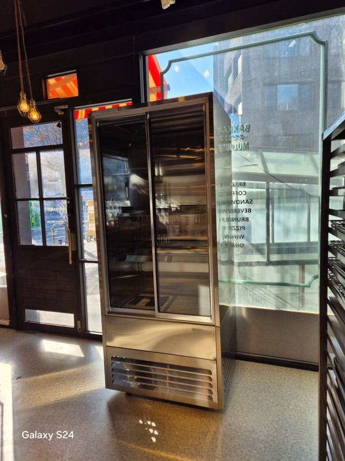
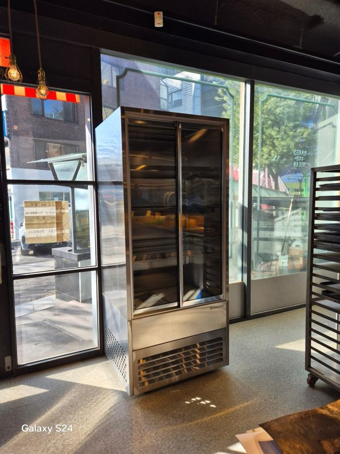
3. 콤프레서 제조사와 온도대
냉장 장비의 핵심은 콤프레서입니다. 명판에서 제조사를 확인하고, 국내에서 부품을 계속 구할 수 있는 회사 제품인지 살펴보세요.
냉장고 길이와 칸 수에 비해 출력이 충분한지도 중요합니다.
음료용 일반 온도대인지, 저온용인지도 구분해야 합니다. 맥주나 주류를 더 차갑게 두고 싶은데 일반 음료용이라면 원하는 온도까지 내려가지 않을 수 있습니다.
가동 중 금속끼리 긁히는 소리나 심한 떨림이 있는지, 배관이나 배선에 임의로 손댄 흔적이 있는지도 함께 보세요.
4. 잔여 보증과 부품 수급
중고는 새 제품보다 고장 가능성이 높은 게 사실이라, 고장 났을 때 고칠 수 있는 구조인지가 더 중요합니다.
설치일 기준으로 보증이 남아 있는지, 이전 사용자에게서 보증이 승계되는지 판매자에게 물어보세요.
현재도 판매 중인 모델인지, 컨트롤러와 팬모터 같은 주요 부품이 단종되지 않았는지도 확인 대상입니다.
이 질문에 답을 못 듣는다면 가격이 아무리 좋아도 한발 물러서시는 게 낫습니다.
- 설치일과 남은 보증 기간을 물어보세요.
- 모델명으로 부품 공급 여부를 확인하세요.
체크리스트
- 유리문 자동 닫힘과 패킹 밀착
- 가동 후 유리 김서림
- 선반 처짐과 조명 상태
- 콤프레서 제조사·출력·온도대
- 제조 연월과 실제 사용 기간
- 잔여 보증과 부품 단종 여부
현장에서 자주 보는 경우: 연식은 같은데 상태가 전혀 다른 중고 매물
중고 상담을 하다 보면 같은 해에 만든 제품인데 상태 차이가 큰 경우를 자주 봅니다. 하루 종일 문이 열리는 매장에서 쓰던 제품과 저녁 위주로 영업한 매장에서 쓰던 제품은 부품이 닳는 속도가 다르고, 주방 옆처럼 덥고 습한 곳에 있던 제품은 더 빨리 지칩니다.
그래서 몇 년 됐는지보다 제조 라벨의 제조 연월, 설치와 철거 시점, 24시간 가동이었는지, 이전 업종이 무엇이었는지를 함께 확인하시길 권해 드립니다.
이 정보가 모이면 앞으로 얼마나 더 쓸 수 있을지 감이 잡히고, 매장 크기에 맞는 매물이 없을 때는 맞춤 제작과 비교해 볼 기준도 생깁니다.
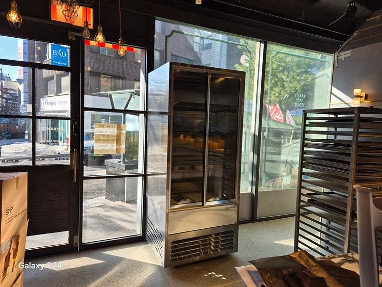
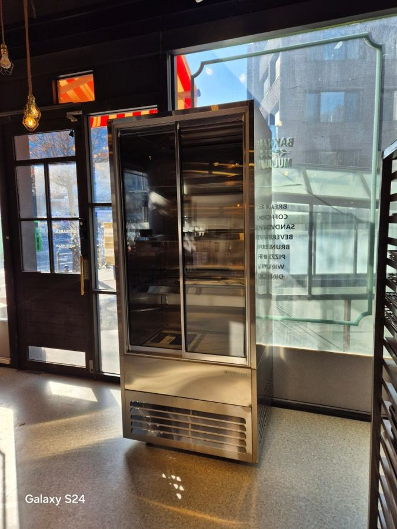
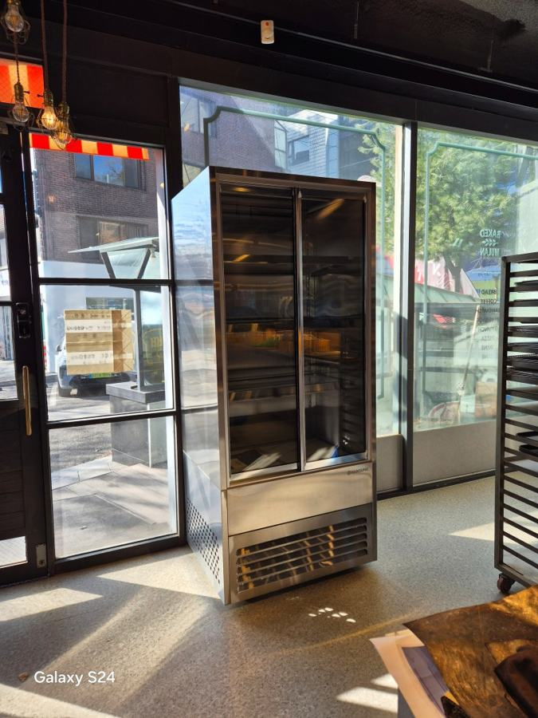
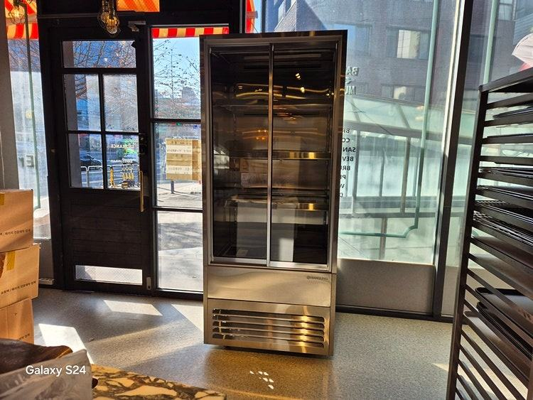
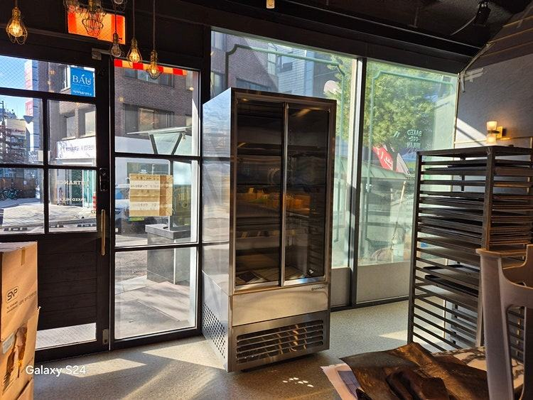
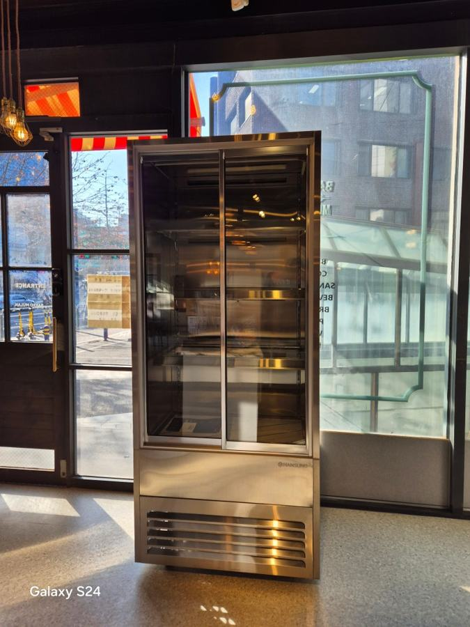
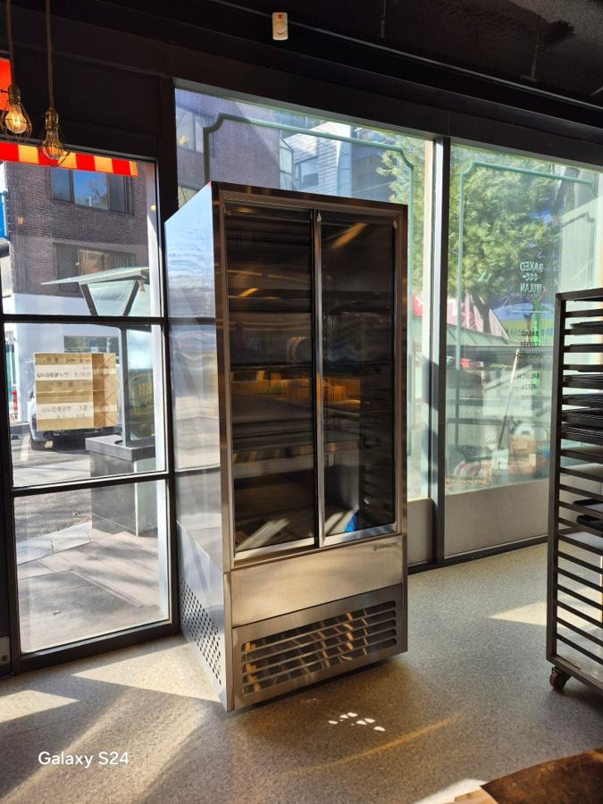
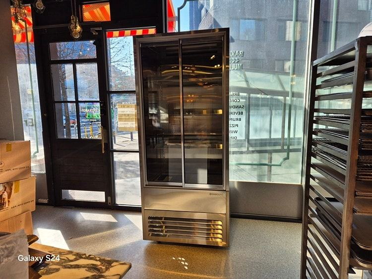
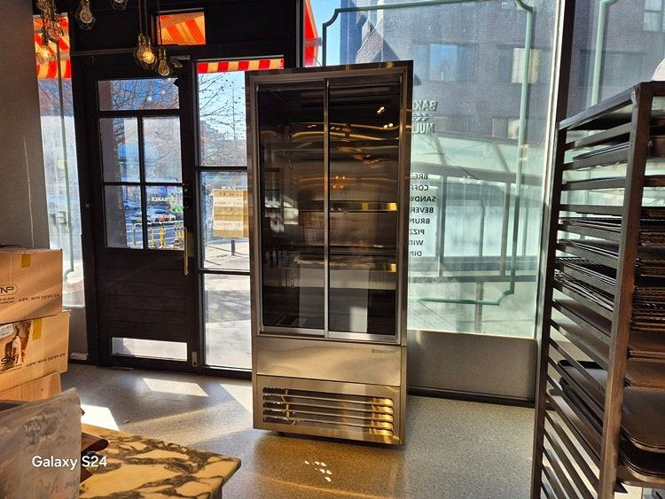
자주 묻는 질문
중고 음료수냉장고도 쓸 만한 경우가 있나요?
제조 연월과 사용 기간이 분명하고, 콤프레서가 안정적으로 돌며, 보증이나 부품 공급이 이어지는 제품이라면 충분히 쓸 만합니다.
이 조건에서 멀어질수록 수리 위험이 커집니다.
매장 벽면 길이에 딱 맞는 중고가 없으면 어떻게 하나요?
음료수냉장고는 칸 수와 문 개수를 매장 폭에 맞춰 제작할 수 있습니다. 실측 치수와 주로 넣을 음료 종류를 알려 주시면 구성을 안내해 드립니다.
새로 맞추면 A/S는 어떻게 되나요?
한성쇼케이스는 전국 240여 개 A/S 센터를 운영하고 있어 지역에 상관없이 점검을 받으실 수 있습니다.
대표전화 031-986-2458로 문의해 주세요.
매장 조건에 맞춰 만드는 한성쇼케이스
원하시는 제품 사진과 설치할 공간 사진만 보내 주셔도 매장에 맞는 구성을 추천해 드립니다.
- 전국 240여 개 A/S 전담 센터 운영
- 본사 대량 자재 매입으로 품질 대비 합리적인 가격
- 유럽제·삼성 냉각 콤프레셔 적용
- 국내 최초 쇼케이스 전문 디자이너 상주
매장 폭과 원하는 진열 구성을 알려 주세요. 실측과 견적을 안내해 드립니다.
031-986-2458